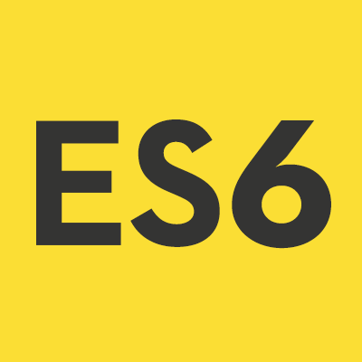

Advisor Innovation Labs Open Souce Contributor Guide
Introduction
Thank you for your interest in helping out. AI Labs is committed to building the best possible software and we believe that one of the best ways to do this is to contribute to the development community and (hopefully) benefit from wide peer review. Please feel free to reach out to #EMAIL/WEB# with any questions.
What do I need to know to help?
AI Labs uses the following technologies that you should be familiar with in order to help:
-
PHP 5.6
-

Javascript
-
Functional Programming
-

Ramda
How can I chip in?
- Find an issue that you are interested in addressing by going to the GitHub Issues pages at Architecture and Architecture-devtools.
- Fork the repository to your local GitHub organization so it lives at your-GitHub-username/repository-name.
- Clone the repository to your local machine.
- Create a new branch for your contribution.
- Make appropriate changes.
- Commit your changes with a short but descriptive message.
- Push the changes to the remote repository using git push origin branch-name-here.
- Submit a pull request to the upstream repository.
- Title the pull request with a short description including the issue number if applicable. Eg. "Added more log outputting to resolve #4352". Important: Be sure that your description is helpful to the person clearing your PR. Mention any additional work needed, areas of concern, ideas, etc. Don’t be shy, no PR is ever perfect.
Once you submit a PR it will be reviewed and either returned with questions or suggestions or accepted with a merge. This process may take a bit so please be patient and feel free to reach out if you have concerns.
How can I get help?
Please visit ###OS website?### to connect with other contributors.